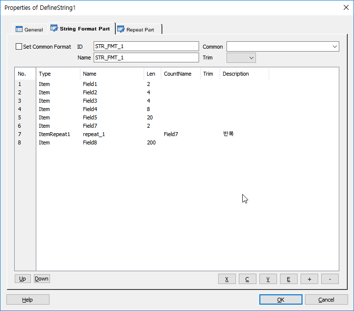
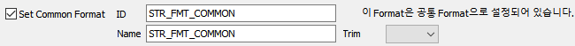
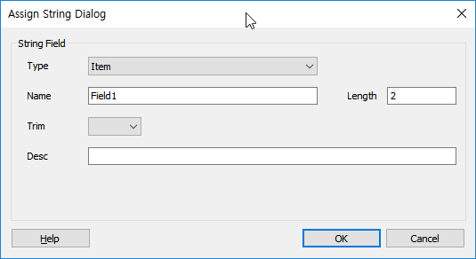
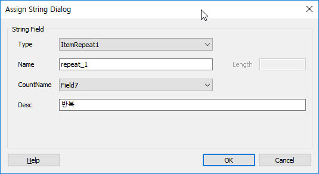

문자열을 파싱할 목적으로 정의된 문자열 파싱 포멧입니다.
StringParser 아이템에서 사용되어 지며, Parsing Size일 경우 정의된 사이즈를 이용하여 파싱하여 정의된 변수에 넣지만, ParsingDelimiter인 경우는 구분자로 파싱하여 사이즈 무시하고 정의된 변수에 넣는다.
ICON
PROPERTIES

 String Format Part : 파싱에 사용될 변수를 정의 합니다.
String Format Part : 파싱에 사용될 변수를 정의 합니다.
 Repeat Part : 파싱에 사용될 반복 변수를 정의 합니다.
Repeat Part : 파싱에 사용될 반복 변수를 정의 합니다.
Set Common Format Check Box : 현재 설정하고 있는 포멧을 공통 포멧으로 설정 합니다. 체크 박스를 체크하면 Common Format 설정 항목이 사라지고 메시지가 표시 됩니다.

ID : Format ID를 정의 합니다.(StringParser Item에서 사용 합니다)
Name : Format Name을 정의 합니다.(개발자 참조용)
Common : 정의 되어있는 공통포멧을 설정 합니다.
Trim All : 파싱변수 리스트 각 필드의 Trim속성의 값을 한번에 모두 설정합니다.
Up Button : 선택한 파싱 변수의 위치를 위로 이동 합니다.
Down Button : 선택한 파싱 변수의 위치를 아래로 이동 합니다.
X Button : 선택한 리스트를 잘라냅니다.(Ctrl+X)
C Button : 선택한 리스트의 내용을 복사 합니다.(Ctrl+C)
V Button : 복사한 리스트의 내용을 붙여넣기 합니다.(Ctrl+V)
E Button : 선택한 파싱 변수의 내용을 수정 합니다. 파싱 변수를 마우스 더블 클릭 해도 됩니다.(수정 창 팝업)
+ Button : 파싱 변수를 추가 합니다.(추가 창 팝업)
- Button : 선택한 파싱 변수를 리스트에서 삭제 합니다.

Type : 필드의 성격을 결정하는 것으로 4가지 유형의 Type이 있습니다.
Item : 기본 변수 포멧
ItemRepeat1, ItemRepeat2, .. : 반복부가 시작될 변수의 위치를 지정합니다.(String Format Part)
ItemRepeat1, ItemRepeat2, .. : 반복 부 변수를 의미합니다.(Repeat Part)
♣ 반복 부는 쵀대 9개 까지 지원합니다.
Name : 변수의 이름을 지정 합니다.
Length : 변수의 길이를 지정 합니다.
Trim : 변수에서 공백을 제거합니다.(none, left, right, all)
Desc : 변수의 설명을 지정 합니다.(개발자 참고용이며 sxml이나 다른곳에는 사용되지 않음)
CountName : Repeat 변수를 사용 할 시 반복될 Count가 있는 파싱 변수명을 지정 합니다.

RELATED